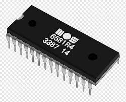

ROM is a primary memory that stores information permanently . It is called read only memory because we can only read the programs and stored into it but cannot write on it . ROM stores a program containing instructions called 'firmware' that helps to start up a computer which is known as bootstrap. however, there are some types of ROM.
